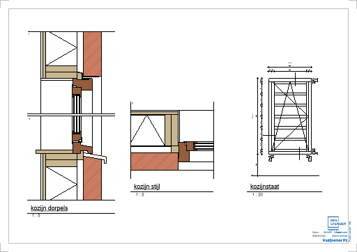
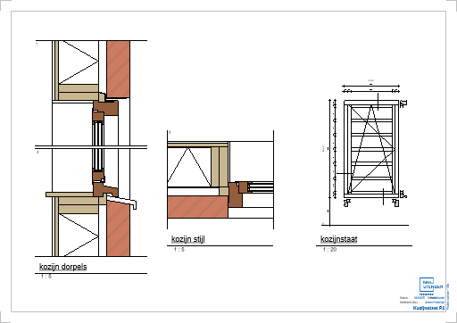

Portfolio
Jaar 1
Villa
Het tweede project van het eerste jaar is het Villa project.
In dit project moesten we een villa ontwerpen voor een opdrachtgever
en omdat we vier schouwen hebben gaan we ook dieper in op bepaalde dingen van het project.
Architectuur
Het architectuur werkblad bestond uit een onderzoek over een gekozen bouwstijl, dit onderzoek moesten we in duo's uitvoeren en uiteindelijk los van de schouw presenteren. Bij dit onderzoek moesten we onder andere kenmerken van de bouwstijl opzoeken, maar ook referentie gebouwen die wel en niet in de buurt stonden, de gebouwen die wel in de buurt stonden moesten we bezoeken. De bouwstijl die ik moest onderzoeken was de Amsterdamse school bouwstijl, deze bouwstijl is uiteindelijk ook de stijl geworden van mijn villa.

Schouw 1
De eerste schouw van het villa project ging om het ontwerpen van de villa, de villas moesten in Blitsaerd komen te staan, in deze wijk mochten we zelf een kavel uitkiezen. Om ons een klein zetje in de goede richting te geven moesten we onderzoeken doen over een bouwstijl, deze bouwstijl kon de stijl van de villa worden. Net als bij Tiny House 1 was deze schouw voor de LUKs initëren en sturen.
Projectdefinitie
Voor het villa project kreeg iedereen een bouwstijl toegewezen, bij deze bouwstijl hoorde dan een docent als opdrachtgever. Ik heb Amsterdamse school gekregen als bouwstijl. Om erachter te komen wat voor villa de opdrachtgever wilde, is er met iedereen die dezelfde bouwstijl had en de opdrachtgever een gesprek geweest om te bespreken wat er moet komen te staan. Verder moest er uitgezocht worden waar in de wijk de villa het beste kon staan en wat de randvoorwaarden zijn.
Schetsontwerp
Ook voor het villa project moesten we een schetsontwerp maken, dit is een goede manier om de eerste ideën op papier te krijgen. Ik had voor de villa al een paar ideeën in mijn hoofd, er moesten namelijk vijf slaapkamers in de villa komen, een kantoor en een carport. Ik vind persoonlijk dat een slaapkamer niet op de begane grond thuis hoort, dus ik had meer kamers op de eerste (en tweede) verdieping. Hier is uit gekomen dat de eerste verdieping over de carport heen gaat en dan op het kantoor rust. Verder heb ik nog wat dingen toegevoegd zodat het een mooi ontwerp werd.
Feedback en Reflectie
Het maken van de opdrachten voor deze schouw ging niet echt bijzonder goed of slecht,
we begonnen met de architectuur opdracht die we in duo's moesten maken.
De rest van de opdrachten wat 'gewoontjes' gemaakt,
ik had zoals bij Tiny House 1 wel weer onderschat hoeveel tijd het schetsontwerp ging kosten,
maar ik heb het afgekregen.
De feedback die ik gekregen heb ging vooral over kleine dingetjes,
onder andere dingetjes in het schetsontwerp die niet helemaal klopten.
Deze feedback was makkelijk te verwerken in de volgende opdrachten.
Ook konden de posters wat meer structuur krijgen, dit heeft even gekost maar is uiteindelijk wel beter geworden.
Detail
Ook voor het villa project moesten we meerdere details tekenen, voor deze schouw begonnen we met een paalfundering met ringbalk, beganegrondvloer en gevel. Het tekenen van dit detail vond ik een stuk makkelijker omdat ik al een getekend had, ik wist dus beter wat ik aan het doen was.
Schouw 2
De tweede schouw van het Villa project had hetzelfde doel als de tweede schouw van het Tiny House project, voor deze schouw moesten we het schetsontwerp uitwerken tot een voorontwerp, hier moesten meerdere dingen voor bepaald worden. Ook moesten we meerdere keuzes maken en onderbouwen.
Constructies
Het constructies werkblad van deze schouw was redelijk hetzelfde als die van Tiny House 2, we moesten overspanningsrichtingen bepalen, stabiliteitswanden aangeven en een latei berekenen. Deze latei was dit keer niet van een raam in het huis, maar van een doorgang naar een (fictieve) uitbouw. Verder moesten we de windbelasting berekenen van de hele villa, dit kwam bij mijn villa uit op 168,12kN.
Bouwfysica en MCAs
Het bouwfysica werkblad van deze scouw was wel een stukje anders dan die van Tiny House 2,
dit werkblad ging vooral over vocht en warmte.
We moesten namelijk berekenen of er ergens in een (fictieve) platdakconstructie vocht zou kunnen ontstaan,
Ook moesten we met behulp van een mulicriteria analyse (MCA) een keuze in isolatiemateriaal maken.
Voor een ander werkblad moesten we nog 4 MCAs maken deze gingen over vloeren, wanden, kozijnen en de fundering.
Deze MCAs moesten we ook maken met het doel een goede keuze in de verschillende onderwerpen te maken.
Revit
Net als bij Tiny House 2 moesten we voor deze schouw ook een voorontwerp maken in Revit, het begin van het model had ik erg snel staan, maar toen kwam ik bij het dak. Het dak heb ik namelijk meerdere keren overnieuw moeten doen om de vorm zowel aan de binnenkant en de buitenkant correct te krijgen.
Detail
Het detail van deze schouw was het detail van een dakvoet, dit was een stukje lastiger dan een fundering maar ik ben erg trots op mijn resultaat.
Feedback en Reflectie
Voor dezer schouw was ik heel enthousiast begonnen met het Revit model waardoor de andere opdrachten een beetje achterwegen vielen,
vooral het detail moest een beetje op het laatste moment,
maar over het algemeen ben ik trots op wat ik gelevert heb.
De feedback voor deze schouw ging vooral over de posters, die waren niet echt mooi, dit heb ik in de volgende schouwen echt verbeterd.
Definitief ontwerp
Het definiteif ontwerp was niet heel anders dan het voorontwerp, het moest vooral kloppen met de regels van het BBL. Dit betekende voor mij dat het hele dak 30cm omhoog moest, die extra ruimte heb ik gebruikt om een dakgoot toe te voegen. Verder moest er aan mijn model niet heel veel veranderen.
Schouw 3
Na de tweede schouw gingen we verder werken naar een definitief ontwerp, hier kwam vooral het BBL bij kijken.
We moesten namelijk uitzoeken of ons ontwerp voldeed aan de regels die in het BBL staan en als dat niet zo was moesten we het aanpassen.
Deze schouw was dus vooral heel bureaucratisch en dat vond ik niks.
Omgevingsvergunning
Om een huis te mogen bouwen moet er een vergunning aangevraagd worden,
om zo'n vergunning te krijgen moet je ontwerp voldoen aan alle BBL regels.
Dit moesten we voor deze schouw uitzoeken.
Ook moesten we een kostenraming maken op basis van verschillende bronnen en on ontwerp,
dit kwam voor mijn villa uit op €1.321.252,86 voor de globale investeringskosten.
Bouwfysica
Voor het bouwfysica werkblad moesten we redelijk wat doen,
allereerst moesten we een ruimte in onze villa berekenen op daglichtoppervlak en dan uitzoeken of dit voldeed aan het BBL.
Omdat de daglichtoppervlak berekening waarschijnlijk vervangen gaat worden met de daglichtfactor moesten we dit ook uitzoeken met behulp van de velux daylight visualizer.
Verder moesten we een zonnestudie doen en uitzoeken welke glassoort het we het beste toe konden passen in onze villa.


Feedback en Reflectie
Deze schouw ging over het algemeen erg soepel,
ik deed bijna alles mooi optijd en daardoor is het eindproduct een stukje beter geworden.
Ook was ik de avond voor de inleverdatum wat eerde klaar dan normaal.
De feedback die ik heb gekregen was erg weinig,
eigenlijk stond er alleen dat een berekening die ik voor het constructies werkblad heb gemaakt niet helemaal klopte.
Constructies
Voor het constructies werkblad moesten we berekenen hoeveel mijn villa ging wegen, hiervoor had ik revit laten uitzoeken hoeveel ik van elk materiaal nodig had. Dit heb ik dan in een grote tabel gezet en berekend hoeveel het totaal was. Met dit gewicht moesten we uitzoeken hoeveel heipalen we nodig zouden hebben, ik kwam uit op 3.
Werktekeningen
Voor deze schouw moesten we ook een werktekeningen set leveren, dit waren vooral de tekeningen die we voor de andere werkbladen moesten maken + een extra plattegrond en doorsnede.
Details
Voor de vierde schouw moesten we 3 details tekenen, een onderdorpel, bovendorpel en stijl van een kozijn. Deze details moesten we dan kopieren in Revit en combineren met een kozijnstaat.
Installaties
Om een gebouw goed te kunnen gebruiken zijn installaties erg handig, de installaties die wij erin moesten tekenen waren de riolering en HWA en de elektrische installaties. Voor de riolering had ik 2 standleidingen nodig omdat ik op de eerste verdieping 2 badkamers heb, deze 2 badkamers kon ik niet met 1 standleiding verbinden zonder die standleiding midden in de woonkamer te hebben.
 

Schouw 4
Vanuit het definitief ontwerp gingen we voor de vierde schouw verder naar de werktekeningen en andere benodigheden om het project te realiseren. Dit varieerde van een bouwplaatsinrichting naar een koppenmaarberekening en een kozijnstaat. Ook moest er nog uitgezocht worden hoe de riolering en HWA (HemelWaterAfvoer) van de villa gingen lopen.
Bouwplaatsinrichting
Een gebouw word gebouw op een bouwplaats, deze bouwplaats moet op een logische manier ingericht worden om ongelukken te voorkomen maar toch efficient te werken. Wij moesten een bouwplaatsinrichting maken voor de villa op basis van 2 bouwplaatsen waar we zelf zijn geweest.
Feedback en Reflectie
Deze schouw vond ik best wel leuk om aan te werken en dat kon ik ook merken aan de tijd dat ik aan dingen besteede.
Wat ik zelf vooral mooi vond was dat ik erg vroeg klaar was vergeleken met de eerdere schouwen.
De feedback voor deze schouw bestond vooral uit kleine dingetjes die misten of niet klopten,
dit is voor volgende opdrachten makkelijk om te veranderen.